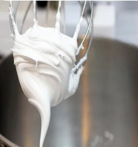

← Volver al módulo 5

Glasé Real
Un glasé espeso y firme ideal para flores, detalles finos y patillaje.
Ingredientes
- 1 clara de huevo
- 1 cucharada de jugo de limón
- 2 a 3 tazas de azúcar impalpable
Preparación
Batir la clara a punto nieve.
Agregar el jugo de limón a las claras batidas.
Añadir el azúcar poco a poco hasta que desaparezca el brillo y se formen picos firmes.
Batir primero en batidora y terminar con cuchara para lograr la textura perfecta.
El glasé debe quedar espeso, ideal para flores y patillaje.